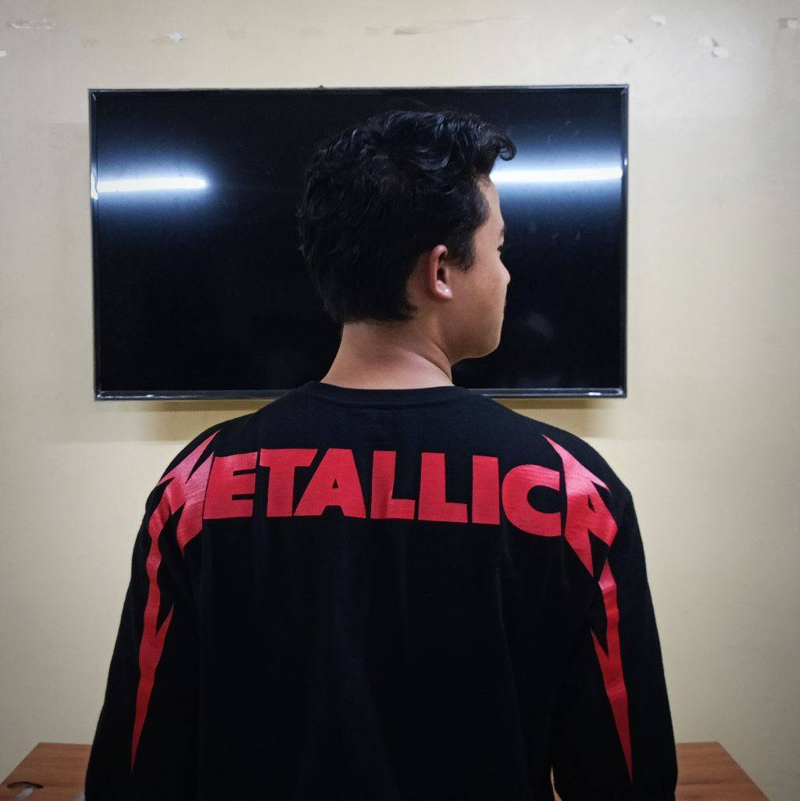

Mark Jayson D. Ramilo
Hello I'm Mark Jaysom D. Ramilo, a BSIT second year college student who has the characteristic of being prudent and kind to others and I am one of the most reliable when it comes to things and I am willing to help those in need of help.
Hobbies
I know that singing can be called a talent, but for me it is also a hobby, because I love singing so much, I do it wherever I like and I also do it when I take a bath, clean the house, and even washing the dishes.

Crushiie
I am in awe of her beauty, and not not only because of her captivating eyes and radiant smile but also because of her remarkable achievements. At such a young age, she managed to build a home of her own, claim her own land, and even having her own cars.